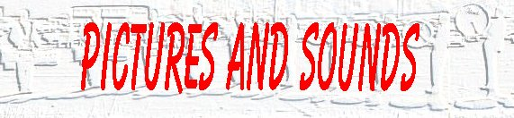
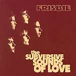

| album |
| home page |
|  |
|
|  |
| I spent the night at a friends house downtown on saturday night. We walked around the town like idiots, quite overdoing ourselves with caffeine and nicotine (gasp. I like waking up downtown and walking out in to the streets, with everyone around and sounds everywhere. I am working on a multimedia project on the band radiohead, using flash and authorware, for a class of mine. These are some preliminary sketches of what it might look like. |